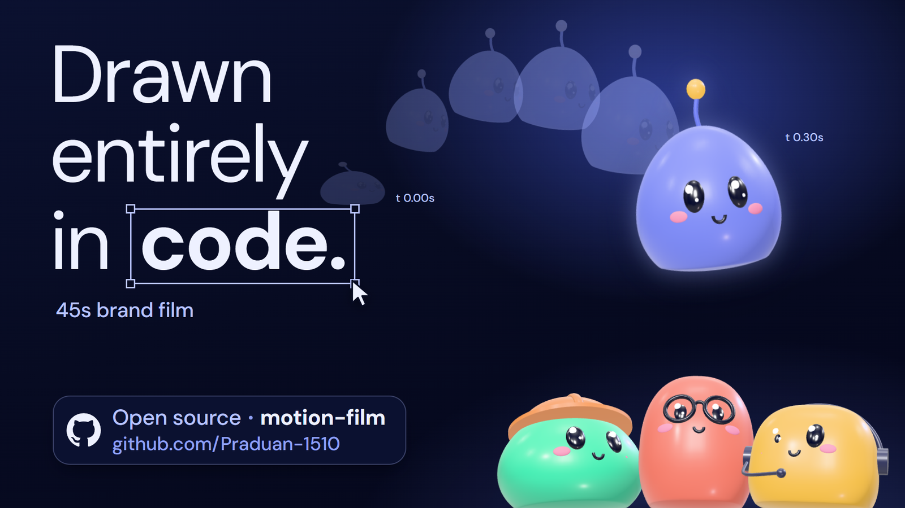

motion-filmA Claude Code skill for motion-graphics videos, drawn entirely in code.
Brand films, product promos and explainers, with kinetic type, Liquid Glass UI, a travelling mascot, real motion blur and a synthesized score, exported as MP4. No After Effects, no timeline. Open source under the MIT licence.

How a film gets made
Write the beats
One idea per line, each held long enough to read: 0.3 s a word plus half a second. When a line doesn't fit, a beat goes, not the pace.
Build the film page
An HTML page draws any frame as a pure function of time, so you can jump to any second and see exactly what's on screen.
Render with motion blur
Headless Chrome captures each frame 12 to 40 times and blends them in linear light. The score is synthesized from the film's own cue sheet.
Check, then export
Scripts verify the frame count, colour tags, audio sync and that the mascot never jumps, before the master and web MP4s ship.
Install
# in Claude Code
/plugin marketplace add Praduan-1510/motion-film
/plugin install motion-film@motion-film-marketplace
# check the machine: Node 22+, Chrome with WebGL, Python 3.10+, ffmpeg
/motion-film:motion-film doctordoctor prints the exact fix for anything missing. The full command list is in the README.
Where it is
Now, v0.1
- A brand-neutral runtime: motion engine, Liquid Glass, WebGL backgrounds, particles, kinetic type, mascot, iOS and phone components
- The render pipeline: motion blur, master and web MP4s, synthesized score
- QA tools: contact sheets, MP4 verification, mascot continuity, runtime lint
Next
- Brand-kit ingestion and the first templates
- Four formats: 16:9, 9:16, 1:1 and 4:5
- A guided flow: brief, storyboard, preview, final MP4s